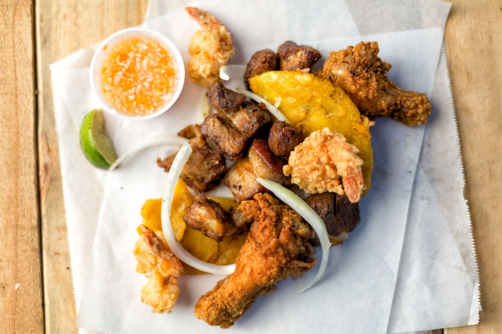
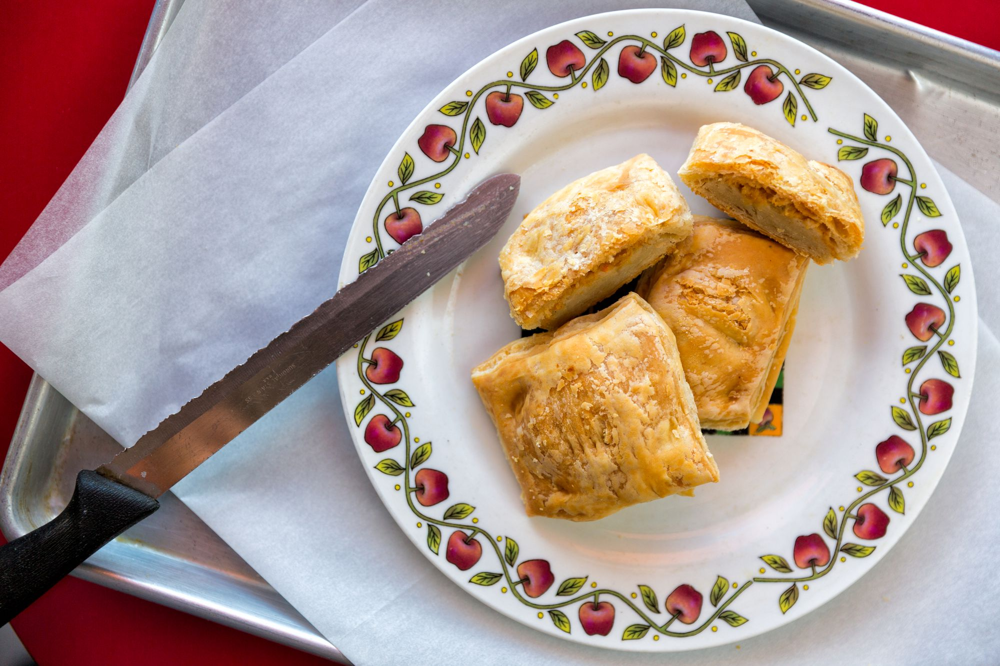

Haiti
Haiti is a beautiful country that is a part of formerly known as Hispanola. Where the current people speak a mixture of French, Spanish and African Dialect called "Creole." Haiti has beautiful beaches, amazing mountain ranges and delicious food. Visit this great island to get away from everyday work stress life! Here's some of there cusine:
- Fritay
- Pate
- Lambi

Labadee
Here's a picture of one of Haiti's most popular location:

Jamaica
Jamaica, a Caribbean island nation, has a lush topography of mountains, rainforests and reef-lined beaches. Many of its all-inclusive resorts are clustered in Montego Bay, with its British-colonial architecture, and Negril, known for its diving and snorkeling sites. Jamaica is famed as the birthplace of reggae music, and its capital Kingston is home to the Bob Marley Museum, dedicated to the famous singer.
- Ackee and Saltfish

- Callaloo
- Jerk Pork
Montego Bay
Here's a picture of one of Jamaica's most popular location:
Dominican Republic
The Dominican Republic is a Caribbean nation that shares the island of Hispaniola with Haiti to the west. It's known for its beaches, resorts and golfing. Its terrain comprises rainforest, savannah and highlands, including Pico Duarte, the Caribbean’s tallest mountain. Capital city Santo Domingo has Spanish landmarks like the Gothic Catedral Primada de America dating back 5 centuries in its Zona Colonial district.
- Pastelitos

- Pescado Frito

- Mofongo

Amber Cove
Here's a picture of one of the Dominican Republic's most popular location:

Cuba
Cuba, officially the Republic of Cuba, is a country comprising the island of Cuba as well as Isla de la Juventud and several minor archipelagos.
Cuba is located in the northern Caribbean where the Caribbean Sea, Gulf of Mexico and Atlantic Ocean meet.
- Elote

- Flan
- Costillitas

Havana
Here's a picture of one of the Cuba's most popular location: